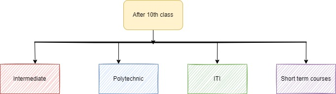
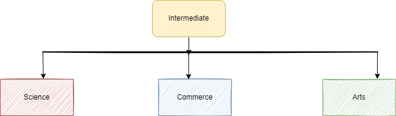

Wondering what after 10th?

After 10th results are out, there is one common question that strikes in every student’s mind “What next after 10th”? Science, Commerce or Arts? This is a common confusion which most of the students face. Every field has a lot of career opportunities but choosing the right stream which students are interested should be the main concern. Sachin Tendulkar failed in 10th. But he was very clear what he wanted from his life. But are we? Few students are very clear about what they want in their life. But there are many students who are confused about their career path. Class 10th is the most important and confusing crossroad of your career. A right decision can help you blossom in your career. And if you make the wrong choice, you will have to face the consequences for the rest of your life.
Mistakes usually made while choosing the right career after 10th.
- Following the crowd/friends Most of the students chose a career option because their friends chose to do so.
- Parental/Societal pressure Parents obviously want good for their children,so they suggest what they have seen was good at their period of time, outlooking their children's interest.
- Lack of knowledge In past there were very few career options after 10th which didn't required to spend time and efforts to know about all career options, but the world now is outnumbered with options.
Career options after 10th
Intermediate
Course duration: 2 years
-
Science
MPC
Maths Physics and Chemistry.
Architecture, Engineering, Defence Services, Commercial pilot, Statistics, Industrial Designing and Data Analytics are some of the few professions you can strive for.BiPC
Biology, Physics and Chemistry.
There are numerous courses offered in BiPC especially in the medical field such as MBBS, BDS, BSc Physics, BSc Chemistry, BSc Biotechnology, and more.Library sciences.
Library Science Courses are the study of organising and managing libraries. This course deals with the understanding, management, basic principles, laws and ethics of Library Science, aka LiBlSc. Candidates are also taught basic knowledge of almost all the career fields present currently in the world.
-
Commerce
- CEC
group that includes commerce, economics alongside civics.
Students can be a part of numerous three-year Bachelor’s degree courses including B.COM, B.A., BBM, and BBA.
- CEC
-
Arts
- MEC
- HEC
Polytechnic
Duration 3 years
Polytechnic/Diploma in Engineering is a professional course which provides practical knowledge in the field of technology. Many students go for Polytechnic after completing 10th or 12th. Polytechnic course provides only basic and practical knowledge to the students in the engineering field and it is the best choice to go for a professional after completing Polytechnic diploma . Those who finished diploma courses can go ahead engineering courses and study with less spending.
Career options in Polytechnic
- Mechanical
- Computer Science
- Civil
- EEE(Electrical and Electronics Engineering)
- IT(Information and Technology)
- Autombile
- Electronics and Communication
- Bio-Technology
- Electrical
- Chemical
- Aeronautical
- Agriculture
- Architecture
- Bio-Medical
- Marine technology
- Mining technology
- Leather technology
- Textile technology
- Petroleum technology
- Plastic technology
- Rubber technology
ITI
Duration 2 years
ITI or Industrial Training Institutes are usually organisation or training centres that provide top stude seeking easy employement just after completing school.
Carrer option in ITI are
- Fitter
a technician who puts together or installs Machinery, plants, machines, and other mechanical products is called a Fitter. - Computer
basic computer course - Mechanical
- →Radio & TV
- →Motor Vehichle
- →Diesel
- →Marine
- Electrician & Plumber
- Surveyor
- Electrical
- Machine tools
- Welder
- Fireman
- Cookery
- Paint Technology
Paramedical
Duration 3 years
One of the most popular medical courses without NEET is the Paramedical course. Paramedics across the globe have been earning whooping amounts as salary and stipend with the correct choice of paramedical courses after class 10th and 12th. With the latest advancement in the medical sector, the scope of the paramedical courses is increasing day by day.
Career options in Paramedical are
- DLMT(Diploma in Medical Laboratory Technology)
- DHFM
- DOA
- DOT
- Health Inspector
- Sanitory Inspector
Short term courses.
Course duration 1/2 - 1 year.
- DTP
- PGDCA
- Tally
- Internet
- Graphics
- Animation
- Web Designing
- Cyber Security
Other courses
- Beauty & Cosmetology
- Jwelery Designing
- Fashion Designing
- Photography